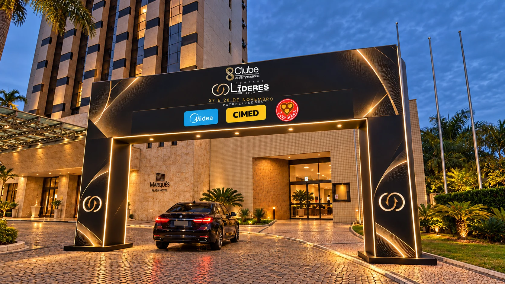
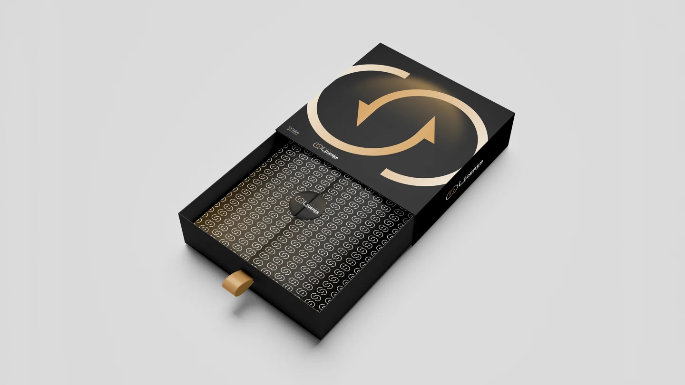
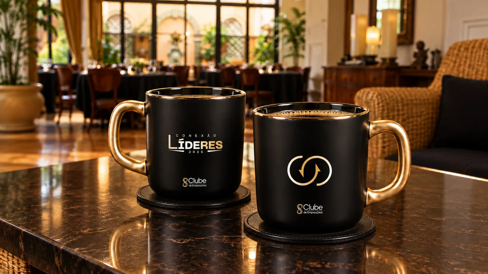
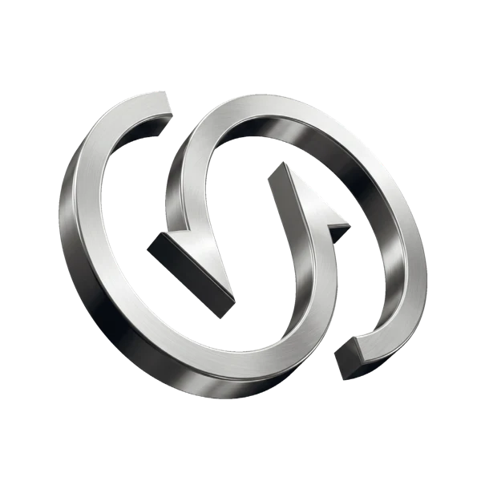
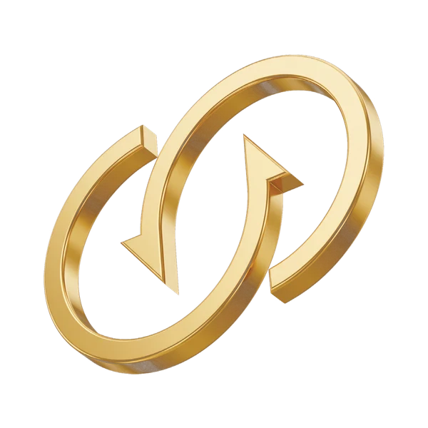

Conteúdo que
amplia sua visão
Palestras e painéis sobre gestão, vendas e liderança, com estratégias para os desafios de quem está à frente de um negócio.
INTELIGÊNCIA DE MERCADO
Quero participarPOUSO ALEGRE · 27 & 28 NOVEMBRO 2026
Dois dias para ampliar sua visão, fortalecer relações e encontrar as pessoas que podem transformar o próximo capítulo do seu negócio.
01 / O ENCONTRO
Um encontro entre quem lidera hoje e quem está construindo o amanhã.
Projetado como uma plataforma corporativa de alto impacto, o Conexão Líderes reúne fundadores, CEOs, diretores e tomadores de decisão que movimentam a economia local e regional.
A proposta é aproximar quem tem visão de expansão e autoridade para decidir. Dois dias de inteligência de mercado, parcerias estratégicas e oportunidades para transformar conexões em negócios.
Explore a experiênciaO valor de uma conexão está
no que vocês podem construir juntos.
02 / A EXPERIÊNCIA
Uma experiência desenhada para aproximar pessoas, ideias e oportunidades.
Palestras e painéis sobre gestão, vendas e liderança, com estratégias para os desafios de quem está à frente de um negócio.
INTELIGÊNCIA DE MERCADOMomentos de networking direcionado para conhecer outros líderes, compartilhar experiências e criar alianças estratégicas.
CONEXÕES RELEVANTESUm ambiente que aproxima soluções, empresas e tomadores de decisão para abrir novas possibilidades de negócio.
NOVAS POSSIBILIDADESMAIS QUE UM ENCONTRO. UM MOVIMENTO.
Oportunidades surgem quando diferentes trajetórias se encontram. Faça parte dessa conversa.
Quero estar presente03 / QUEM VEM SOMAR
Conexão Líderes 2026
Conexão Líderes 2026
Grandes referências. Novas perspectivas para a sua trajetória.
Quero participar desse encontro
04 / O CENÁRIO DO SEU PRÓXIMO PASSO
Estrutura e ambiente para receber líderes, estimular conversas e criar espaço para novas conexões.
Imagem ilustrativa de aplicação da identidade visual.
A IDENTIDADE DO ENCONTRO


Conceitos de aplicação da identidade visual. Imagens ilustrativas.
O ECOSSISTEMA CONEXÃO LÍDERES
Uma comunidade que conecta empresários e aproxima oportunidades.
em negócios gerados entre membros nos seis meses reportados pelo Clube.
empresários conectados ativamente no aplicativo oficial do Clube.
Números apresentados no material institucional de patrocínio.
05 / SUA MARCA NESSA CONEXÃO
Da presença estratégica ao protagonismo no palco. Três formatos para conectar sua marca a quem decide.
COTA PRATA

Visibilidade estratégica
COTA OURO

Visibilidade premium
COTA DIAMANTE
Visibilidade máxima
Cotas limitadas para preservar a exclusividade dos patrocinadores.
Consulte valores e disponibilidade com a organização.
VISIBILIDADE ANTES, DURANTE E DEPOIS DA CONEXÃO
O plano de divulgação apresentado prevê uma campanha iniciada 30 dias antes do evento, com mídia digital e tradicional.
Alcance e cobertura propostos no material comercial; não representam resultados já realizados.
Testemunhal de 40 segundos na voz do apresentador oficial e chamadas gravadas nos intervalos.
Ativações nos telões principais, GCs durante as palestras, portais e totens de LED.
Aplicações nos crachás e kits de boas-vindas, conforme a cota contratada.
Formatos e destaques sujeitos aos benefícios de cada cota.
INFORMAÇÕES ESSENCIAIS
Para empresários, fundadores, CEOs, diretores e profissionais com poder de decisão que buscam ampliar relacionamentos e oportunidades de negócio.
Nos dias 27 e 28 de novembro de 2026, no Hotel Marques Plaza, em Pouso Alegre, Minas Gerais.
Entre em contato com a organização pelo botão abaixo para consultar disponibilidade, valores e condições de participação.
O material do evento apresenta Pablo Marçal e Paulo Vieira como palestrantes confirmados. Consulte a organização para a programação e os horários das participações.
Sim. O material do evento apresenta as cotas Prata, Ouro e Diamante. Fale com a organização para conhecer os formatos e a disponibilidade.
O PRÓXIMO PASSO É O SEU
27 e 28 de novembro · Pouso Alegre, MG
Falar com a organização Henrique Moreno · Diretor